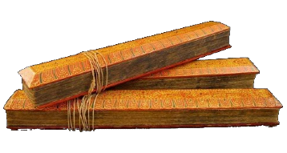

Buddhism

Simbolo
Ang gulong ng batas ay nagsisilbing simbolo ng Buddhism. Sinasabing ang gulong ng dharma ay pinagalaw ni Buddha nang una niyang gawin ang pangangaral na inilalarawan ng isang gulong.
Diyos at Nagtatag
Si Prinsipe Siddhartha Gautama, mas kilala bilang Buddha, ang nagtatag ng Buddhism noong ika-16 siglo. Si Gautama ay naglakbay habang nagninilay-nilay at nanalangin hanggang sa minsan ay dagli niyang nadama ang katotohan ng buhay. Dahil dito, siya ay kinilala bilang “Ang Isang Naliwanagan.”
Mga Selebrasyon
Ang Wesak ay idinaraos ng mga Buddhist mula Mayo hanggang Hunyo ng kapanganakan na naliwanagan at ng kamatayan ni Buddha na naganap lamang sa iisang petsa ngunit sa iba't-ibang taon. Ang Vassa ay panahon para magnilay at mag-aral. Ang Vassa ay tumatagal ng tatlong buwan, kadalasan mula Hulyo hanggang Oktubre. Sa panahon ng Vassa, ang lahat ng mga Budista ay dapat na maglaan ng ilang oras para sa pag-aaral at pagninilay.

Mga Paniniwala
Ipinangaral ni Buddha ang apat na pangunahing ideyang kanyang napag-alaman noong panahon ng kaliwanagan at tinawag niya itong Four Noble Truths—1.Ang buhay ng tao ay puno ng pagpapakasakit at kalungkutan. 2.Ang pagpapakasakit at kalungkutan ay sanhi ng kasakiman ng tao sa kasiyahan at mga materyal na bagay. 3.Matatapos lamang ang pagdadalamhati ng tao sa pamamagitan ng pagwawaksi sa labis na pagnanais sa kasayahan at materyal na bagay. 4.Ang nirvana ay maabot lamang sa pamamagitan ng Eightfold Path at Middle Way, ang pagpapakasakit sa sarili. Ang Eightfold Path ay isang maagang buod ng daan ng mga kasanayang Budismo na humahantong sa pagpapalaya mula sa samsara, ang siklo ng muling pagsilang, sa anyo ng nirvana. Ang Nirvana ay mistulang isang hagdan patungo sa espiritwal na kaganapan.
Banal na Aklat
Nang pagkamatay ni Gautama, ipinangaral at ipinalaganap ng kanyang mga disipulo ang kanyang mga aral. Ito ay naisulat bilang koleksiyon ng mga kasulatang kung tawagin ay "Tripitaka." Ang Tripitaka ay kilala rin bilang "Tipitaka", mula sa mga salitang Pali, ti, na nangangahulugang "tatlo," at pitaka>, na nangangahulugang "mga basket."